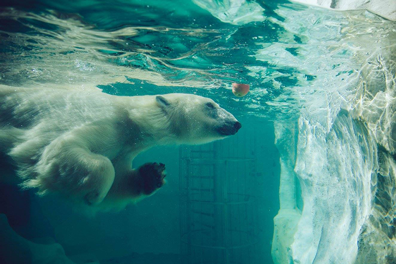
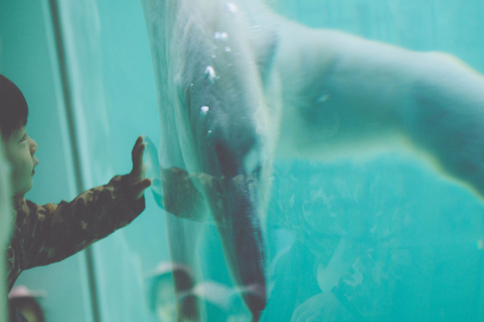

Location
Tokyo, Japan
Category
Travel
Summary
During a week-long trip in Fall 2016, I documented my travels in Tokyo, Japan, where I was surrounded by an entirely different culture than I was used to and a surprisingly calming environment for such a massive metropolis. Naturally, I tend to thrive at zoos with my camera, but embraced the tourist hat by whipping out my camera for photographs throughout the entire city.
This trip even inspired my current study of the Japanese language, so when I revisit Tokyo I will know how to politely ask someone if I can take a photo of him/her with his/her dog. As with all of my photography, minimal equipment was used, and I relied solely on natural light.